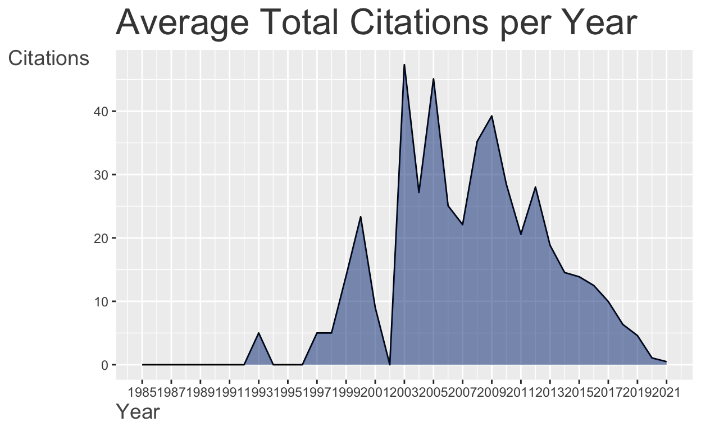
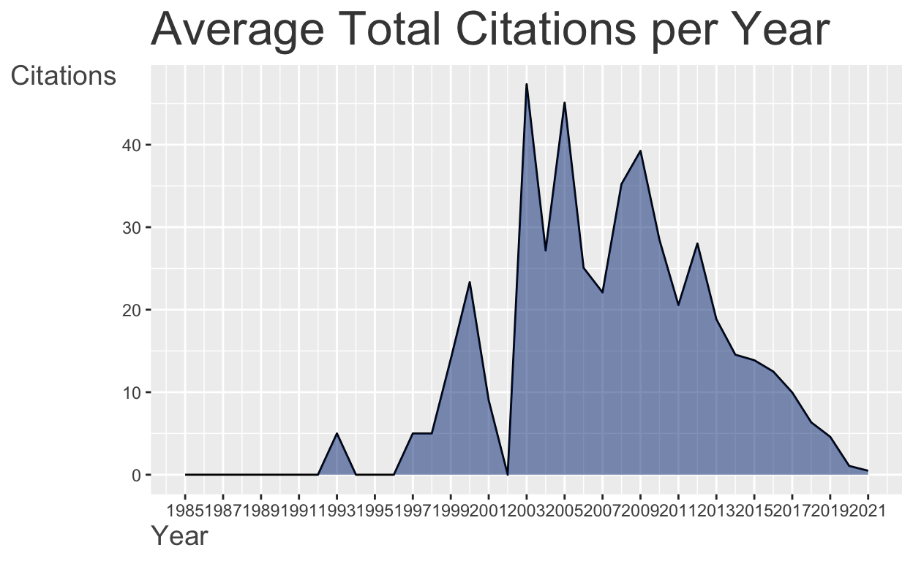
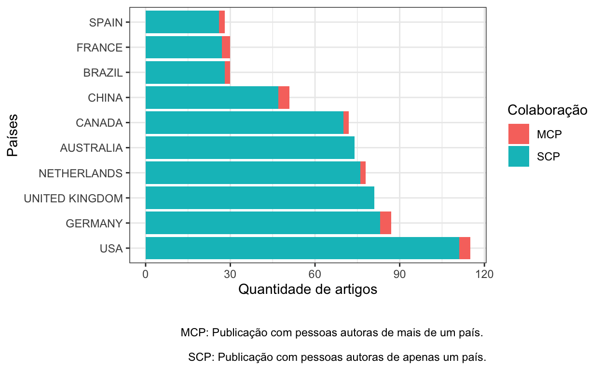
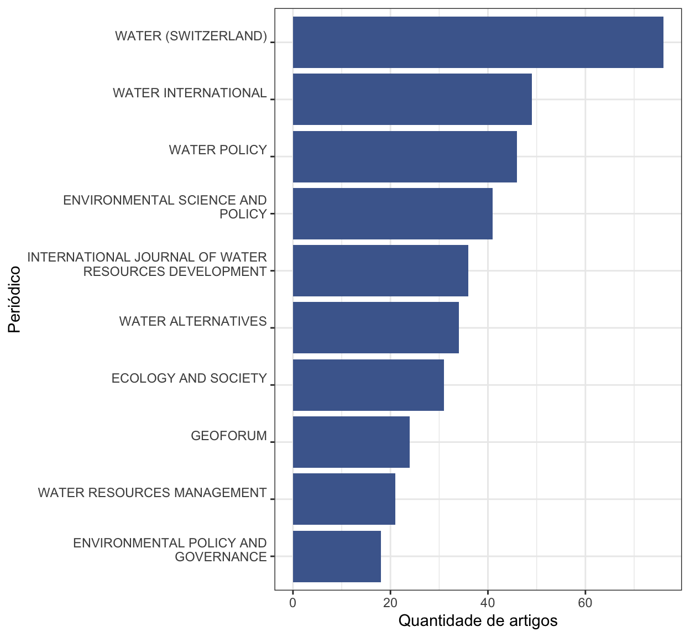

Introdução
Olá! Eu costumo demorar bastante para escrever cada texto que adiciono neste blog, então consequentemente o blog demora muito para receber atualizações.
Portanto, esse post será um pouco diferente dos posts anteriores! Será mais curtinho e simples, e não será um conteúdo completo, assim consigo postar o que é possível neste momento (e quem sabe faço os posts parte 2, 3, 4.. futuramente).
Dito isso, eu comecei a escrever este post enquanto estudava o pacote {bibliometrix}. Eu estou estudando este pacote para utilizar na minha pesquisa, e provavelmente ainda ficarei estudando por um tempo, já que o mesmo tem muitas possibilidades. Este post servirá de registro do que aprendi até agora, e talvez eu o atualize ao longo do tempo!
O {bibliometrix} (Aria and Cuccurullo 2017, 2021) é um pacote que oferece ferramentas para realizar análises bibliométricas. Os tutoriais que o pacote oferece são muito interessantes e foi essencial utilizar o pacote com este tutorial aberto em outra aba!
Obtendo as bases de dados
Antes de começar a usar o bibliometrix, é necessário obter as bases de dados que serão utilizadas. Neste exemplo, eu testei com dados obtidos nos repositórios Scopus e Web of Science, sendo que o acesso foi feito através do “Acesso CAFe” no Portal de Periódicos da Capes.
Para testar o pacote (e escrever este post), realizei a busca de artigos com uma query genérica (não é a que eu utilizarei na minha pesquisa), para fins didáticos.
A busca feita foi: trabalhos que possuíam as palavras “water governance” em seu título.
Querys:
no Scopus:
TITLE ( water AND governance )no WOS:
TÍTULO: (water governance)
O WOS só permitiu exportar até 500 registros por vez. Foi necessário exportar 3 arquivos diferentes, porém isso dependerá da quantidade de resultados que teremos nas pesquisas!
Este tutorial apresenta informações sobre como exportar os dados das plataformas.
Biblioshiny
O pacote possui um app em Shiny, que possibilita fazer as análises com o bibliometrix em uma interface point and click, sem que seja necessário escrever códigos! Essa é uma possibilidade muito legal para pessoas que querem usar a ferramenta mas não programam em R. Para usar o biblioshiny, é necessário:
- Instalar o pacote bibiliometrix com a seguinte função:
install.packages("bibliometrix")- Abrir a interface utilizando a função:
bibliometrix::biblioshiny()
Utilizando o bibliometrix no R
Eu achei muito legal a possibilidade de utilizar uma interface em Shiny, porém prefiro realizar as análises com R, assim tenho o código disponível para que seja reproduzido futuramente.
Primeiramente vamos carregar alguns pacotes utilizados:
Importar os dados
A próxima etapa é importar os dados. A função para importar é bibliometrix::convert2df(), sendo importante informar como argumento: o caminho até o arquivo a ser aberto, a fonte dos dados (dbsource) e o formato do arquivo.
Os dados exportados do scopus são mais simples, pois é apenas um arquivo:
dados_scopus <- bibliometrix::convert2df("dados/scopus.bib",
dbsource = "scopus",
format = "bibtex")
Converting your scopus collection into a bibliographic dataframe
Done!
Generating affiliation field tag AU_UN from C1: Done!Para importar os dados do Wos, utilizei os passos abaixo:
# listar arquivos que preciso abrir:
# todos eles começam com o padrão "savedrecs_"
arquivos_wos <-
list.files("dados", pattern = "^savedrecs_", full.names = TRUE)
arquivos_wos
[1] "dados/savedrecs_1_500.bib" "dados/savedrecs_1000_final.bib"
[3] "dados/savedrecs_501_1000.bib" # Utilizando esse vetor de caminhos até os arquivos,
# utilizamos a função convert2df para importá-los
dados_wos <- bibliometrix::convert2df(arquivos_wos,
dbsource = "wos",
format = "bibtex")
Converting your wos collection into a bibliographic dataframe
Done!
Generating affiliation field tag AU_UN from C1: Done!Depois de importar os dados das diferentes bases, é necesário unir todos em um única base, que será utilizada para fazer as análises. A função bibliometrix::mergeDbSources() realiza essa tarefa, e utilizando o argumento remove.duplicated = TRUE, os documentos duplicados são removidos.
dados_brutos <-
bibliometrix::mergeDbSources(dados_scopus, dados_wos,
remove.duplicated = TRUE)
1015 duplicated documents have been removed# Obrigada beholdersaltitante!
Os dados exportados retornaram diferentes tipos de trabalhos, como editoriais, erratas, etc. Neste caso, quero apenas que ARTIGOS sejam mantidos na análise:
# Quais tipos de trabalhos existem na base?
dplyr::distinct(dados_brutos, DT) %>%
knitr::kable(row.names = FALSE)
| DT |
|---|
| ARTICLE |
| ERRATUM |
| REVIEW |
| CONFERENCE PAPER |
| NOTE |
| DATA PAPER |
| EDITORIAL |
| BOOK CHAPTER |
| BOOK |
| ARTICLE IN PRESS |
| SHORT SURVEY |
| ARTICLE; EARLY ACCESS |
| PROCEEDINGS PAPER |
| ARTICLE; PROCEEDINGS PAPER |
| EDITORIAL MATERIAL |
| BOOK REVIEW |
| CORRECTION |
| MEETING ABSTRACT |
| NEWS ITEM |
# Filtraremos apenas os artigos NA BASE
dados <- dados_brutos %>%
filter(DT == "ARTICLE")
Pronto! Agora temos a base preparada. O significado do nome das colunas pode ser conferido na documentação do pacote.
glimpse(dados)
Rows: 1,176
Columns: 32
$ AU <chr> "JOHNS C;VANNIJNATTEN D", "SAN J M C;ARMARIO B J", …
$ DE <chr> "ADAPTIVE GOVERNANCE; COMPLEXITY THEORY; ENVIRONM…
$ ID <chr> NA, NA, "DECISION MAKING; WATER MANAGEMENT; WATER…
$ C1 <chr> "RYERSON UNIVERSITY, CANADA; WILFRID LAURIER UNIVER…
$ CR <chr> "AKAMANI, K., ADAPTIVE WATER GOVERNANCE: INTEGRATIN…
$ JI <chr> "ENVIRON. SUSTAIN. IND.", "J. ARID ENVIRON.", "J. C…
$ AB <chr> "FOR THE PAST FEW DECADES, JURISDICTIONS HAVE BEEN …
$ PA <chr> NA, NA, NA, NA, NA, NA, NA, NA, NA, NA, NA, NA, NA,…
$ AR <chr> "100102", "104403", "125804", "143867", NA, NA, NA,…
$ RP <chr> "JOHNS, C.; RYERSON UNIVERSITYCANADA; EMAIL: CJOHNS…
$ DT <chr> "ARTICLE", "ARTICLE", "ARTICLE", "ARTICLE", "ARTICL…
$ DI <chr> "10.1016/j.indic.2021.100102", "10.1016/j.jaridenv.…
$ BE <chr> NA, NA, NA, NA, NA, NA, NA, NA, NA, NA, NA, NA, NA,…
$ FU <chr> "SOCIAL SCIENCES AND HUMANITIES RESEARCH COUNCIL OF…
$ BN <chr> NA, NA, NA, NA, NA, NA, NA, NA, NA, NA, NA, NA, NA,…
$ SN <chr> "26659727", "01401963", "09596526", "00489697", "10…
$ SO <chr> "ENVIRONMENTAL AND SUSTAINABILITY INDICATORS", "JOU…
$ LA <chr> "ENGLISH", "ENGLISH", "ENGLISH", "ENGLISH", "ENGLIS…
$ TC <dbl> 0, 0, 0, 0, 0, 0, 0, 0, 0, 1, 0, 1, 0, 1, 0, 0, 1, …
$ PN <chr> NA, NA, NA, NA, "1", "2", "1", "1", NA, NA, "2", NA…
$ PP <chr> NA, NA, NA, NA, "111-129", "434-444", "1-35", "177-…
$ PU <chr> "ELSEVIER B.V.", "ACADEMIC PRESS", "ELSEVIER LTD", …
$ DB <chr> "ISI", "ISI", "ISI", "ISI", "ISI", "ISI", "ISI", "I…
$ TI <chr> "USING INDICATORS TO ASSESS TRANSBOUNDARY WATER GOV…
$ VL <chr> "10", "187", "290", "761", "32", "17", "23", "70", …
$ PY <dbl> 2021, 2021, 2021, 2021, 2021, 2021, 2021, 2021, 202…
$ FX <chr> "THIS RESEARCH WAS FUNDED BY THE SOCIAL SCIENCES AN…
$ AU_UN <chr> "RYERSON UNIVERSITY;WILFRID LAURIER UNIVERSITY", "U…
$ AU1_UN <chr> "NOTREPORTED;RYERSON UNIVERSITYCANADA;NOTREPORTED",…
$ AU_UN_NR <lgl> NA, NA, NA, NA, NA, NA, NA, NA, NA, NA, NA, NA, NA,…
$ SR_FULL <chr> "JOHNS C, 2021, ENVIRON SUSTAIN IND", "SAN JUAN MES…
$ SR <chr> "JOHNS C, 2021, ENVIRON SUSTAIN IND", "SAN JUAN MES…Funções do bibliometrix para analisar os dados
O pacote bibliometrix possui uma função chamada bibliometrix::biblioAnalysis(), que fornece uma sumarização dos dados. Não vou apresentar o resultado aqui pois é muito longo e não agrega muito no post, mas é possível ver um exemplo neste tutorial do pacote.
resumo <- bibliometrix::biblioAnalysis(dados)
Algo interessante são os gráficos gerados pela função plot() quando oferecemos o resultado da função bibliometrix::biblioAnalysis(). São gerados diversos gráficos padronizados automaticamente:
graficos_bibliometrix <- plot(resumo)


 

Porém os gráficos são gerados em inglês, e não consegui personalizar os gráficos já gerados. Portanto, acho que um exercício legal é reproduzir as visualizações para que seja possível personalizar o que for necessário (por exemplo, o idioma), e gerar as imagens formatadas para adicionar nos nossos relatórios.
Reproduzindo as visualizações com o pacote ggplot2
Autoras(es) mais produtivas(os)
Fazendo com bibliometrix
graficos_bibliometrix[1]
$MostProdAuthors
Reproduzindo com ggplot2
# Primeiro precisamos descobrir qual é o
# número máximo de autores em um artigo.
# Isso será usado depois para separar a coluna
# de nomes de pessoas autoras.
numero_max_autores <-
stringr::str_split(dados$AU, ";") %>%
lengths() %>%
max()
dados %>%
tidyr::separate(AU,
sep = ";",
into = glue::glue("autor_{1:numero_max_autores}")) %>%
tidyr::pivot_longer(
cols = glue::glue("autor_{1:10}"),
names_to = "ordem_autor",
values_to = "nome_autor",
values_drop_na = TRUE
) %>%
dplyr::group_by(nome_autor) %>%
dplyr::count() %>%
dplyr::arrange(desc(n)) %>%
dplyr::ungroup() %>%
dplyr::slice(1:10) %>%
ggplot() +
geom_col(aes(x = reorder(nome_autor,
desc(n)), y = n),
fill = '#4b689c') +
coord_flip() +
theme_bw() +
labs(x = "Pessoas autoras",
y = "Quantidade de artigos")

Produção por ano
Fazendo com bibliometrix
graficos_bibliometrix[3]
$AnnualScientProd
Reproduzindo com ggplot2
# O código abaixo é necessário para preencher
# com 0 os anos sem nenhuma publicação.
anos_vazios <- tibble::tibble(
PY = min(dados$PY):max(dados$PY),
n = 0
) %>%
dplyr::filter(!PY %in% unique(dados$PY))
dados %>%
dplyr::count(PY) %>%
dplyr::full_join(anos_vazios) %>%
dplyr::arrange(PY) %>%
ggplot(aes(x = PY, y = n)) +
geom_line() +
geom_area(fill = '#002F80', alpha = .5) +
theme_bw() +
labs(x = "Ano", y = "Quantidade de artigos")

Países mais produtivos
Fazendo com bibliometrix
graficos_bibliometrix[2]
$MostProdCountries
Reproduzindo com ggplot2
# Não consegui reproduzir os dados pois não encontrei
# a informação de países na base inicial.
# Julio Trecenti deu uma dica sobre como obter
# os dados a partir de um objeto ggplot.
paises_mais_produtivos <- graficos_bibliometrix[[2]][["data"]]
dplyr::glimpse(paises_mais_produtivos)
Rows: 20
Columns: 3
$ Country <fct> USA, GERMANY, UNITED KINGDOM, NETHERLANDS, AUS…
$ Freq <dbl> 4, 4, 0, 2, 0, 2, 4, 2, 3, 2, 111, 83, 81, 76,…
$ Collaboration <chr> "MCP", "MCP", "MCP", "MCP", "MCP", "MCP", "MCP…paises_mais_produtivos %>%
ggplot() +
geom_col(aes(x = Country,
y = Freq, fill = Collaboration)) +
coord_flip() +
theme_bw() +
labs(x = "Países",
y = "Quantidade de artigos",
fill = "Colaboração",
caption = "\n \n MCP: Publicação com pessoas autoras de mais de um país. \n
SCP: Publicação com pessoas autoras de apenas um país.")

Principais periódicos
Fazendo com bibliometrix
# Não encontrei a função. Mas tem essa opcão no biblioshiny.
# Pesquisar mais!
Fazendo com ggplot2
dados %>%
dplyr::mutate(SO = gsub('(.{1,30})(\\s|$)',
'\\1\n', SO )
) %>%
dplyr::count(SO) %>%
dplyr::arrange(desc(n)) %>%
dplyr::slice(1:10) %>%
ggplot() +
geom_col(aes(x = reorder(SO, n),
y = n),
fill = "#4b689c") +
coord_flip() +
theme_bw() +
labs(x = "Periódico",
y = "Quantidade de artigos")

Conclusão
Este texto é um trabalho em andamento! Mas até agora percebi que o bibliometrix oferece ferramentas muito interessantes, principalmente para importar as bases de dados de diferentes fontes.
Pretendo continuar estudando como utilizar este pacote, pois existem muitas possibilidades ainda a serem exploradas.
Agradecimentos
Walmes Zeviani por disponibilizar o vídeo do treinamento oferecido pelo LEG UFPR e ministrado pela Angélica Tortola Ribeiro (UTFPR e PPGMNE), sobre análise de referências bibliográficas com apoio do pacote Bibliometrix.
Eu comecei a fazer estes estudos (e escrever este post) durante uma transmissão no meu canal na Twitch. Foi muito legal e algumas pessoas participantes me deram dicas sobre o pacote e me ajudaram neste percurso! Obrigada para quem participou e para quem deu dicas!
Edit: Agradeço ao Julio Trecenti pela dica de como obter os dados utilizados para criar um ggplot.